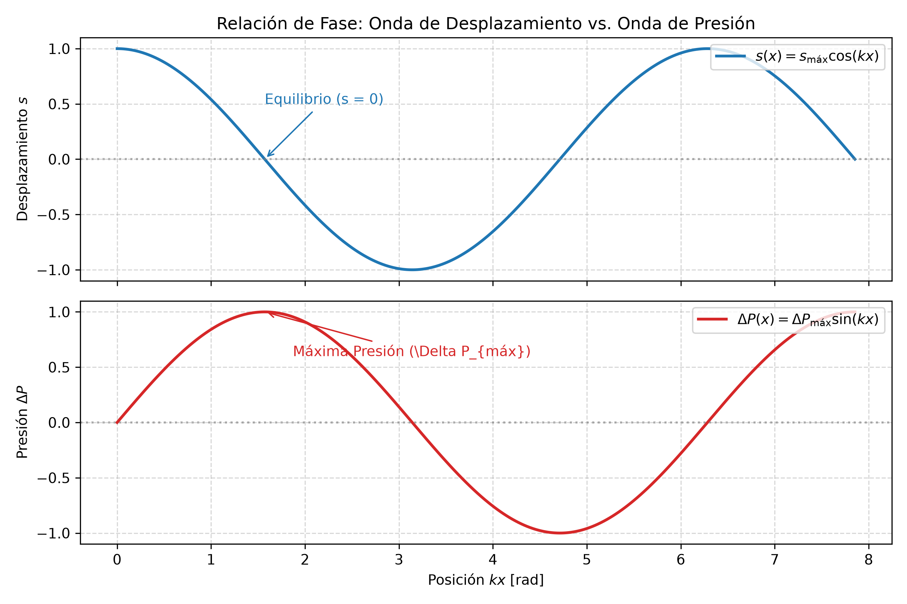
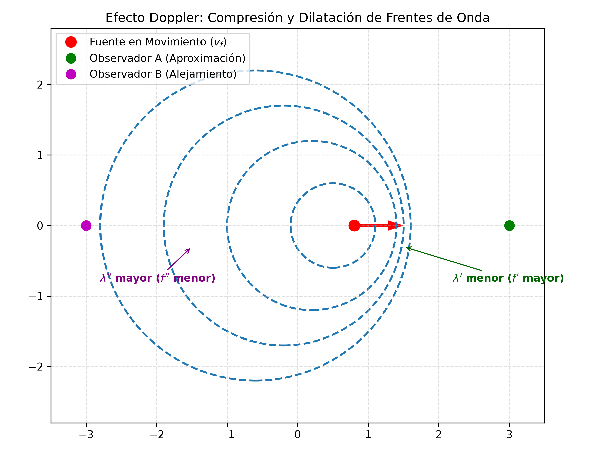

4.3 Ondas Sonoras, Intensidad, Nivel del Sonido y Efecto Doppler
1. Naturaleza de las Ondas Sonoras
Las ondas sonoras son ondas mecánicas longitudinales que se propagan a través de un medio gaseoso, líquido o sólido mediante variaciones periódicas de compresión (alta presión y densidad) y rarefacción (baja presión y densidad).
Descripción Matemática Dual: Desplazamiento vs. Presión
Una onda sonora armónica se puede describir mediante dos funciones complementarias:
-
Onda de Desplazamiento Longitudinal (\(s\)):
$\(s(x,t) = s_{\text{máx}} \cos(k x - \omega t)\)$
Donde \(s_{\text{máx}}\) es el desplazamiento máximo de las moléculas del medio respecto a su posición de equilibrio. -
Onda de Presión (\(\Delta P\)):
$\(\Delta P(x,t) = \Delta P_{\text{máx}} \sin(k x - \omega t)\)$
Donde \(\Delta P(x,t) = P(x,t) - P_0\) es la variación local de presión respecto a la presión de equilibrio \(P_0\).
Desfase de \(\frac{\pi}{2}\) (90°):
Cuando el desplazamiento de las moléculas es máximo (\(s = \pm s_{\text{máx}}\)), la variación de presión es nula (\(\Delta P = 0\)). Cuando las moléculas pasan por su posición de equilibrio (\(s = 0\)), la variación de presión alcanza sus picos máximos (\(\Delta P = \pm \Delta P_{\text{máx}}\)).
2. Rapidez del Sonido y Amplitud de Presión
La rapidez de propagación del sonido en un fluido depende de su compresibilidad (Módulo Volumétrico \(B\)) y de su inercia (Densidad \(\rho\)):
Relación entre Amplitud de Presión y Desplazamiento
A partir de la elasticidad de los fluidos, la amplitud de presión máxima \(\Delta P_{\text{máx}}\) se relaciona con \(s_{\text{máx}}\) mediante:
3. Potencia, Intensidad y Nivel de Sonido
A. Intensidad Sonora (\(I\))
La intensidad de una onda sonora se define como la potencia acústica promedio transferida por unidad de área perpendicular a la dirección de propagación:
B. Ley del Cuadrado Inverso para Fuentes Puntuales
Para una fuente puntual que emite energía uniformemente en todas las direcciones, la superficie de propagación a una distancia \(r\) es \(A = 4\pi r^2\):
C. Nivel de Sonido en Decibeles (\(\beta\))
Dado que la respuesta del oído humano a la intensidad sonora es logarítmica, se define el Nivel de Sonido (\(\beta\) o \(NS\)):
- Intensidad de referencia (Umbral de audición humana): \(I_0 = 1.00 \times 10^{-12} \text{ W/m}^2\) (corresponde a \(0 \text{ dB}\)).
- Umbral de dolor: \(I = 1.00 \text{ W/m}^2\) (corresponde a \(120 \text{ dB}\)).
4. Cualidades del Sonido
- Intensidad (Volumen): Permite diferenciar sonidos fuertes de débiles; depende de la amplitud de la onda (\(s_{\text{máx}}\) o \(\Delta P_{\text{máx}}\)).
- Tono (Altura): Permite diferenciar sonidos agudos (altas frecuencias) de graves (bajas frecuencias); depende de la frecuencia \(f\).
- Timbre: Permite distinguir la fuente sonora que emite dos sonidos de igual frecuencia e intensidad; depende de la mezcla de armónicos secundarios.
- Duración: Tiempo durante el cual se mantiene la emisión sonora.
5. Efecto Doppler
El Efecto Doppler es el cambio aparente en la frecuencia de una onda percibido por un observador debido al movimiento relativo entre el observador y la fuente emisora.
Fórmula General del Efecto Doppler
Donde: * \(f'\): Frecuencia percibida por el observador \([\text{Hz}]\). * \(f\): Frecuencia real emitida por la fuente \([\text{Hz}]\). * \(v\): Rapidez de propagación del sonido en el medio \([\text{m/s}]\). * \(v_o\): Rapidez del observador \([\text{m/s}]\). * \(v_f\): Rapidez de la fuente \([\text{m/s}]\).
Regla Signos Crucial para Parciales
- Numerador (\(v_o\)): Se usa \(+\) si el observador se acerca a la fuente; se usa \(-\) si se aleja.
- Denominador (\(v_f\)): Se usa \(-\) si la fuente se acerca al observador; se usa \(+\) si se aleja.
Criterio Rápido: Todo movimiento de aproximación (ya sea de la fuente o del observador) debe aumentar la frecuencia percibida (\(f' > f\)). Todo movimiento de alejamiento debe disminuirla (\(f' < f\)).
6. Detector de Trampas de Parcial
| La Trampa del Profesor | El Error Típico | La Verdad Física |
|---|---|---|
| Sumar Decibeles: Si dos parlantes emiten \(80 \text{ dB}\) cada uno, pensar que el total es \(160 \text{ dB}\). | Sumar linealmente la escala logarítmica \(\beta_1 + \beta_2\). | Se deben sumar las intensidades físicas en \(\text{W/m}^2\) (\(I_{\text{tot}} = 2I\)). Duplicar la intensidad solo agrega \(\approx 3 \text{ dB}\) (\(83 \text{ dB}\) total). |
| Signos en Doppler: Invertir la convención de signos en el numerador o denominador. | Usar \(+\) en la fuente cuando se aproxima. | La aproximación de la fuente resta en el denominador (\(v - v_f\)), achicando el denominador y aumentando \(f'\). |
| Efecto de Eco/Rebote: Calcular la frecuencia reflejada ignorando que la superficie móvil actúa primero como observador y luego como fuente. | Aplicar la fórmula de Doppler solo una vez. | En problemas de sonar/radar, se aplican dos pasos: 1° el objeto en movimiento recibe \(f'\), 2° el objeto rebota la onda como una nueva fuente en movimiento. |
7. Esquemas Gráficos


8. Ejercicios Resueltos con Análisis Dimensional Explícito
Ejercicio 1: Cálculo de Intensidad Sonora a partir de Nivel en dB (Ejemplo Giancoli)
Consigna: En una esquina congestionada de la ciudad, un medidor da un nivel sonoro de \(\beta = 75.0 \text{ dB}\). Calcule la intensidad física del sonido \(I\) en \(\text{W/m}^2\).
Desarrollo y Cancelación de Unidades:
Partimos de la definición de nivel sonoro:
Despejamos la razón \(\frac{I}{I_0}\):
Sustituimos \(I_0 = 1.00 \times 10^{-12} \text{ W/m}^2\) y \(\beta = 75.0 \text{ dB}\):
Operación numérica:
Desglose dimensional de unidades:
Ejercicio 2: Efecto Doppler Dual con Refracción/Rebote (Ejemplo Serway)
Consigna: Un submarino \(A\) se desplaza por el agua a \(v_A = 8.00 \text{ m/s}\) emitie una señal de sonar de \(f = 1400 \text{ Hz}\). Un segundo submarino \(B\) se desplaza directamente hacia \(A\) a \(v_B = 9.00 \text{ m/s}\). La rapidez del sonido en el agua es \(v = 1533 \text{ m/s}\).
a) Calcule la frecuencia \(f'\) que detecta un observador en el submarino \(B\) mientras se aproximan.
b) Si la onda se refleja en el submarino \(B\) y retorna al submarino \(A\), ¿qué frecuencia \(f''\) detecta el submarino \(A\)?
Desarrollo y Cancelación de Unidades:
Paso a): Frecuencia detectada por \(B\) (Aproximación mutua)
Aquí la fuente (\(A\)) y el observador (\(B\)) se mueven uno hacia el otro.
Por lo tanto, en el numerador (\(v_o = v_B\)) sumamos y en el denominador (\(v_f = v_A\)) restamos:
Sustituimos valores:
Desglose dimensional del factor de velocidad:
Calculamos:
Paso b): Frecuencia del eco recibida en el submarino \(A\)
Ahora el submarino \(B\) refleja el sonido actuando como una fuente móvil que emite a \(f' = 1415.60 \text{ Hz}\) mientras se mueve a \(v_f = 9.00 \text{ m/s}\).
El submarino \(A\) actúa como observador móvil que se acerca a la fuente a \(v_o = 8.00 \text{ m/s}\).
Sustituimos los valores correspondientes:
9. Mapa Conceptual
graph TD
A["Ondas Sonoras"] --> B["Onda de Presión y Desplazamiento"]
A --> C["Intensidad e Impacto Sonoro"]
A --> D["Efecto Doppler"]
B --> B1["Desplazamiento: s = s_max cos(kx - ωt)"]
B --> B2["Presión: ΔP = ΔP_max sin(kx - ωt)"]
B --> B3["Desfase de π/2 (90°) entre s y ΔP"]
C --> C1["Intensidad I = P / (4π r²) [W/m²]"]
C --> C2["Nivel Sonoro β = 10 log10(I / I_0) [dB]"]
C --> C3["Umbral Audición I_0 = 10^-12 W/m²"]
D --> D1["Frecuencia Aparente: f' = f * (v ± v_o) / (v ∓ v_f)"]
D --> D2["Aproximación: f' Aumenta"]
D --> D3["Alejamiento: f' Disminuye"]